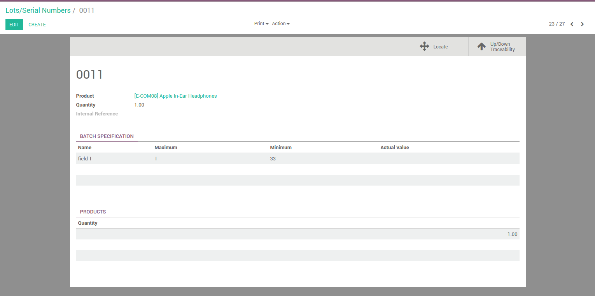

steps
1. select Product Field Configuration menu in inventory and Create fields for Batch Specification
2. maximum and minimum value require to fill if required check box selected.
3.select fields in Batch Specification Tab.
Creation of new product. All required field checked in product field configuration are save in batch specification Tab
4. after create lots number. all batch specification fields of product show in lots number form view
user can't edit batch specification fields value in lots form. just edit actual value.

5.Lot/serial number button in Manufacturing form.
6.Lot/serial number button in stock picking form.